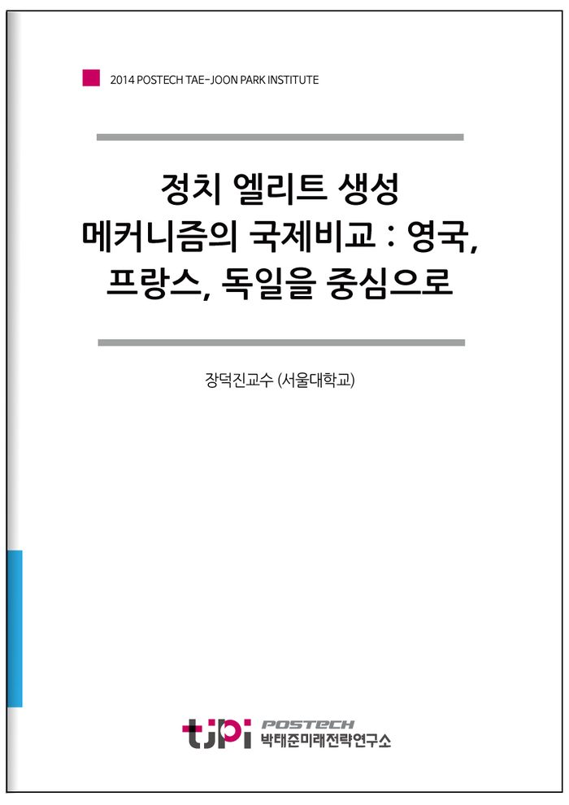

저자 장덕진교수 (서울대학교)연재일 2014-12-09
요 약
정치 엘리트 생성 메커니즘의 국제비교: 영국, 프랑스, 독일을 중심으로
왜 한국정치에 엘리트 충원 메커니즘이 필요한가?
한국은 대부분의 주요한 사회적 문제들에 있어서 궁극적으로는 정치의 후진성이 항시 지적되고, 정치인에 대한 국민들의 신뢰가 OECD 국가 중 최저선일 뿐 아니라, 정치의 대표성을 측정하는 갤라거 인덱스(Gellagher Index)나 정당간 유효경쟁의 정도 등에서 모두 한국은 OECD 국가 중 하위권에 머물고 있다. 한국에서는 정치가 문제를 해결하기보다는 문제의 제공자 역할을 하고 있는 것이다. 여기에 선거제도와 단임정부의 문제까지 더해지다 보니 정당은 장기적 정책입안 기능을 거의 하지 못한 채 정책의 수립과 집행은 '선출되지 않은 권력'인 관료에게 떠맡겨지고 정당의 역할은 정권을 쟁취하는 데만 점점 더 집중되어가는 양상이다. 제도적인 측면에서는 궁극적으로 개헌이나 선거법 개정 등 여러 대안을 검토해야 할 필요성이 있겠으나, 제도를 만드는‘사람들’의 측면에서는 정치 엘리트의 충원 메커니즘에 대한 고민이 필요하다.
영국, 프랑스, 독일과 한국의 비교
비교 대상인 영국, 프랑스, 독일은 각기 다른 특징들을 가지고 있으며 한국의 현실과 관련해 서로 다른 시사점들을 보여준다. 영국과 프랑스는 정치 엘리트가 되기 위해 거쳐야 할 명문교들이 분명하게 존재한다는 점에서 특정 대학 출신들(50대 중반 이후에는 특정 고등학교까지)이 정치 엘리트 충원을 과점하고 있는 한국과 공통점을 가지고 있다. 그러나 독일에는 명문교는 존재하지만 ‘엘리트 코스’는 존재하지 않는다.
민주화 이후 한국 대통령 중에 전업 관료 출신은(군인을 관료에 포함한다면) 노태우 전 대통령밖에 없다. 노무현 전 대통령은 장관을 지냈지만 전업관료라기보다는 정치인으로서 장관직을 수행한 것이고, 이명박 전 대통령은 서울시장을 지냈지만 선거를 통해 선출된 것이었다. 그밖에 김영삼, 김대중 전 대통령과 현 박근혜 대통령은 관료직을 가진 적이 없다. 반면 프랑스는 관료 출신 대통령이 다수를 차지한다. 프랑스에서는 성공적인 관료 경력이 정계에 입문하는 경로이기 때문이다.
독일의 정치 엘리트는 정당이 배출할 뿐 아니라 나아가 정당은 종종 관료의 후견자 역할을 하기도 한다. 독일 정당의 역할은 정치에만 국한되지 않으며 사회 전반의 조정과 타협, 그리고 시민교육에까지 관여한다. 이것은 독일식 조합주의의 전형적 특징인데, 90년대 이후 독일 모델에도 변화가 일어나고 있다.
영국의 정치 엘리트는 전통적으로 기존에 이미 엘리트 계급에 속한 계층의 이너 써클(inner circle)로 간주되어왔지만, 이러한 폐쇄성은 긴 시간에 걸쳐 완만하게 변화하고 있다. 특히 70년대 후반부터 이어진 보수당 정부의 장기집권 이후 정치의 전문직업화가 가속화되어가는 양상이고, 비대해진 정부와 특권을 누리는 관료를 덜어내고 슬림화 하겠다는 보수정부의 아젠다는 이명박 정부 및 박근혜 정부의 아젠다와 일맥상통하는 바가 있다. 영국에서 정치의 전문직업화의 한 가지 결과는 젊은 정치인들의 부상이었는데, 70년대 ‘40대 기수론’ 이후 정체되어 있는 한국 정치에서 최근 세대교체론이 등장한다는 측면에서도 주목할 만한 가치가 있다.
한국과 크게 다른 독일의 강한 시사점
‘엘리트 코스’가 존재하지 않고, 협의제 민주주의가 정착되어 있으며, 선거제도의 비례성이 높은 독일은 어찌 보면 비교대상 국가들 중 한국의 현실과 가장 거리가 먼 것으로 보인다. 그러나 2012년 대선에서 가장 중요한 의제 중 하나였던‘경제민주화’가 독일의 ‘사회적 시장경제’에 그 뿌리를 두고 있으며, 한국에서 선거제도 개선방안으로 가장 자주 언급되는 것이 독일식 정당명부제도이며, 박근혜 정부의 고용률 70% 목표가 독일의 고용률 70%를 벤치마킹한 것이고, 최근 박근혜 대통령이 노동시장 유연화의 구체적 준거로 독일의 하르츠 개혁과 아젠다2010을 직접 언급한 것 등은 의미심장하다. 독일의 현실은 한국의 현실과 가장 멀리 있지만, 독일은 한국이 나아가야 할 이상으로 가장 자주 언급되고 있는 것이다.
독일의 정치 엘리트 생성 메커니즘은 한국이 앞으로 나아갈 길에서 어떤 엘리트 충원방식을 가져야 할지와 관련해 시사점을 제공할 수도 있을 것이다.
한국사회의 주요 병폐로 계속 지적되어온 학벌 문제도 독일 정치 엘리트 충원에서는 별로 발견되지 않는다. 한국의 고질적인 정치무관심과는 달리 독일의 정당은 비당파적 정치교육에 많은 자원을 할애한다. 민심과 따로 노는 한국정치와 달리 독일의 협의민주주의는 상대적으로 민심을 더 많이, 더 골고루 반영한다. 승자독식의 한국 정치제도와는 달리 독일은 비례성이 매우 높은 선거제도를 가지고 있다. 정책의 단절로 고통 받는 한국과 달리 독일은 한 가지 정책을 놓고 수차례의 정권교체에도 불구하고 수십년 간 논의를 이어갈 수 있는 구조를 가지고 있다.
그러나 이러한 독일식 정치체제 및 정치 엘리트 충원방식을 한국에 이식했을 때 독일에서와 같이 잘 작동할 수 있을 것인지는 여전히 미지수이다. 독일 사회의 합의지향적 기반을 한국은 철저히 결여하고 있기 때문이다.
목 차
Ⅰ. 머리말
Ⅱ. 영국의 정치 엘리트 생성 메커니즘
Ⅲ. 프랑스의 정치 엘리트 생성 메커니즘
Ⅳ. 독일의 정치 엘리트 생성 메커니즘
Ⅴ. 결론
참고문헌
내 용
[2014 연구논문] 정치 엘리트 생성 메커니즘의 국제비교 : 영국, 프랑스, 독일을 중심으로
장덕진교수 (서울대학교)

